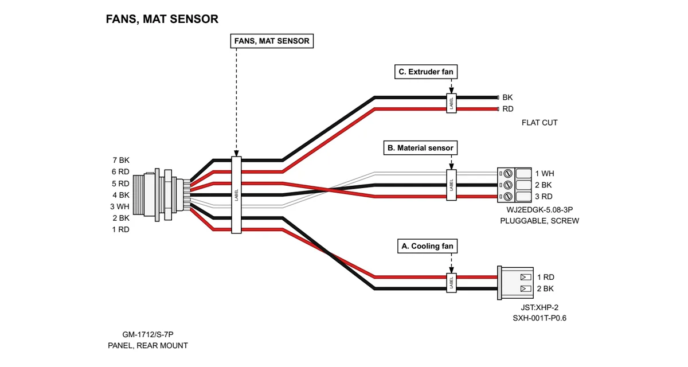
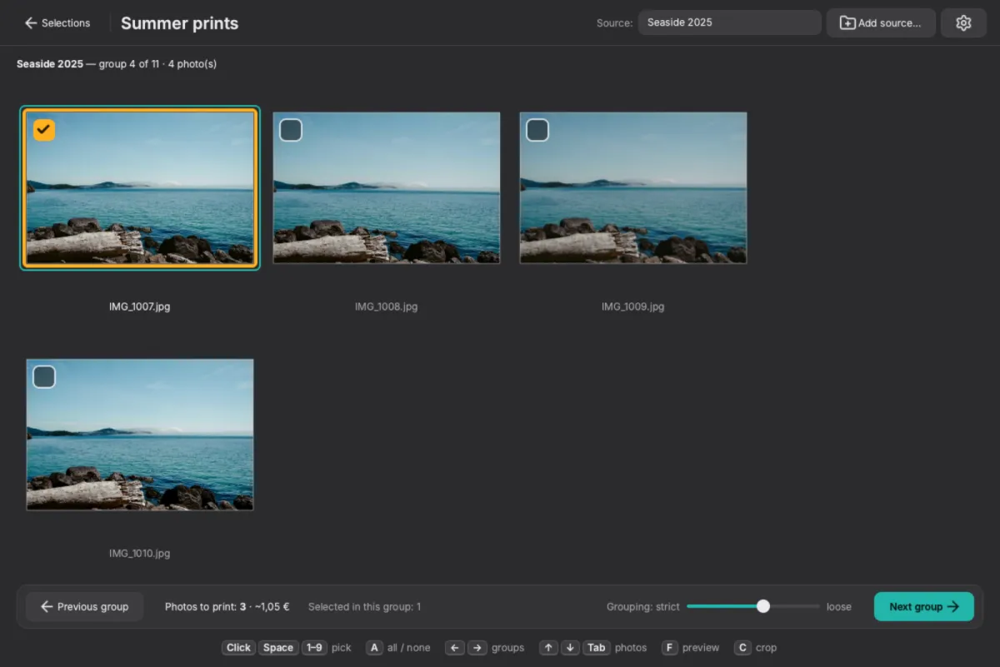
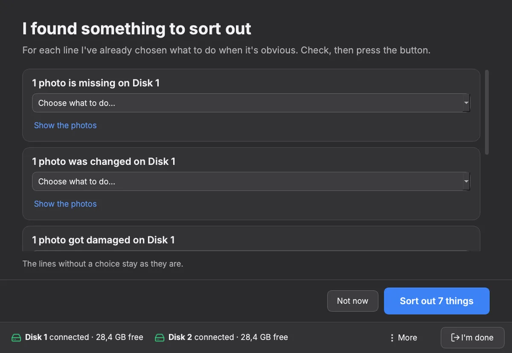
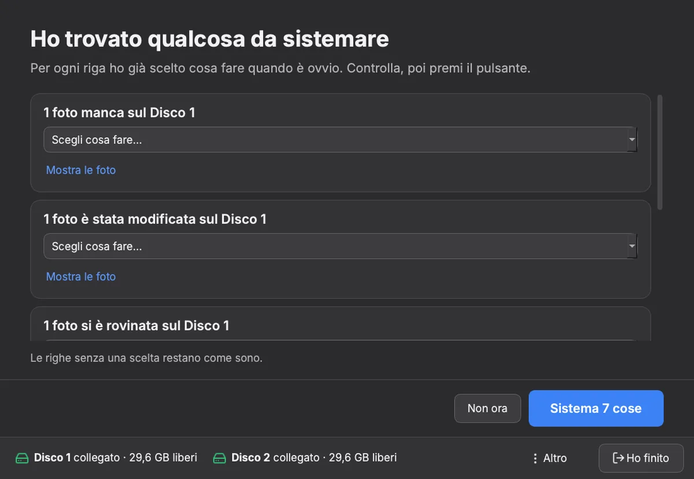
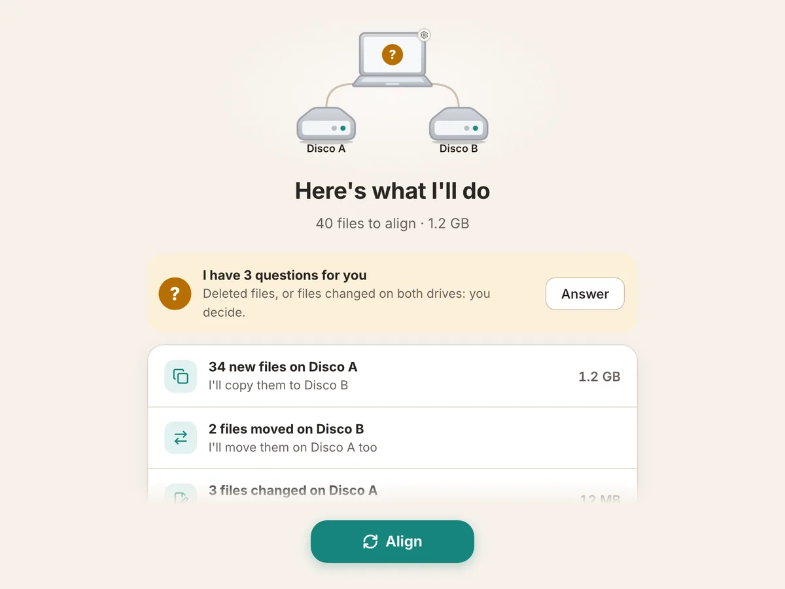
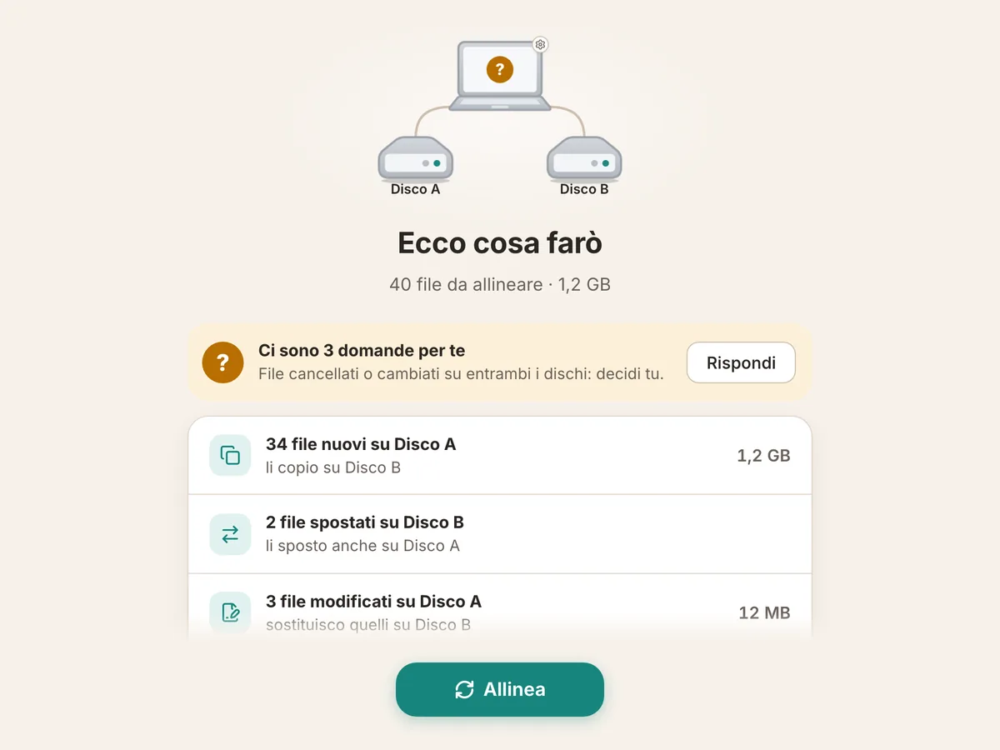
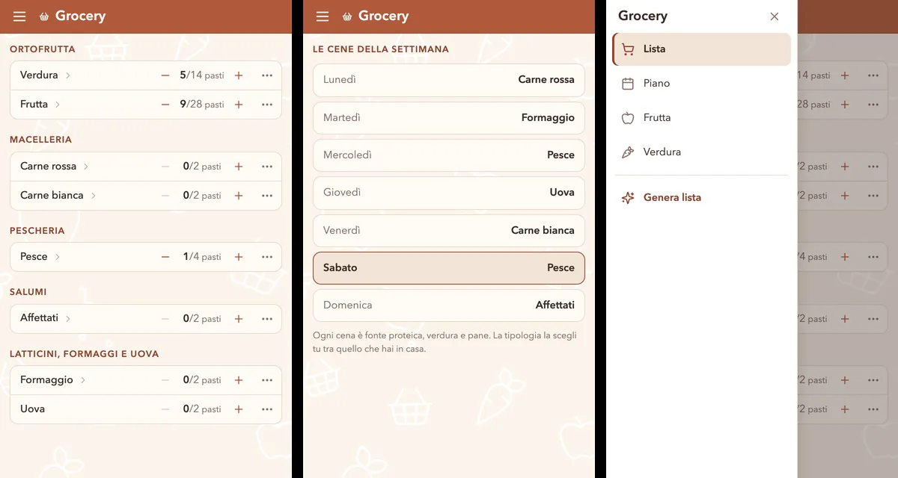
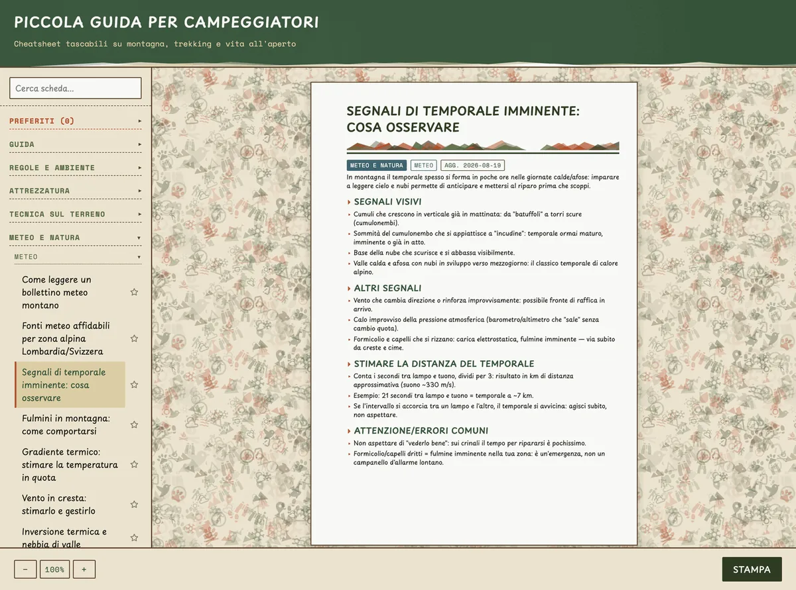

Web platforms and productsPiattaforme web e prodotti
The tools the company runs onI software
su cui gira l'azienda
Ginger Additive · 2024 —
nowoggi
Around ten internal web applications in React, Node.js and
PostgreSQL — CRM, ERP, project management, production, warehouse, customer
support — used every day by everyone in the company, all eight of us. One
central database and one shared template: every new application starts from
it and inherits what the others already have. Underneath, the servers,
deployments and pipelines: domains, certificates, containers, CI. Nobody
praises this layer, but everybody notices the day it stops working, so it
gets the same care as the product.
Una decina di applicazioni web interne in React, Node.js e
PostgreSQL — CRM, ERP, project management, produzione, magazzino, assistenza
clienti — usate ogni giorno da tutta l'azienda, otto persone su otto. Un
database centralizzato e un template comune: ogni nuova applicazione parte da
lì e si porta dietro quello che le altre hanno già. Sotto, i server, i deploy
e le pipeline: domini, certificati, container, CI. È il livello di cui non
parla nessuno, ma che tutti notano il giorno in cui si ferma: per questo lo
tratto come il prodotto.
Internal AI assistantAssistente IA
interno
Ginger Additive · 2024 —
nowoggi
A chatbot wired into the project management system above. It
creates and updates tasks and answers questions about open projects and
incidents in plain language, using Gemini's function calling to act rather than
just reply. It acts inside the login and roles of whoever is using it — the
same permissions, nothing more — and in front of them. In daily use, not a
demo.
Un chatbot collegato al sistema di project management qui sopra.
Crea e aggiorna attività e risponde in linguaggio naturale su progetti ed
emergenze aperte, usando il function calling di Gemini per agire e non solo per
rispondere. Agisce dentro il login e i ruoli di chi lo sta usando — gli stessi
permessi, non uno di più — e sotto i suoi occhi. In uso quotidiano, non un
esperimento.
Room sterilisation systemSistema di
sterilizzazione ambientale
AM Instruments · 2019 — 2023
A hydrogen-peroxide sterilisation system for regulated
pharmaceutical environments, built across its whole stack: a .NET web portal
with its iOS and Android apps, Python tooling — including a trolley for
programming the RFID tags on the canisters — and the embedded C++ on the ARM
controller, with CAN bus control of the sensors and the dosing.
Un sistema di sterilizzazione a perossido di idrogeno per
ambienti farmaceutici regolamentati, sviluppato su tutto il suo stack: portale
web .NET con le sue app iOS e Android, tooling Python — incluso un carrello per
programmare gli RFID delle taniche — e il C++ embedded sul controllore ARM, con
controllo di sensori ed erogazione via CAN bus.
Gas cylinder fleet portalPortale per flotte di bombole
Interlem · 2018 — 2019
Smart scales measuring how much gas is left in welding cylinders,
reporting over LoRa, paired with a web portal for reordering and managing the
cylinder fleet. I worked both ends: the hardware and firmware, in a team, and
the Spring and PostgreSQL portal.
Bilance smart che misurano quanto gas resta nelle bombole per
saldatura, trasmettendo via LoRa, con un portale web per il riordino e la
gestione della flotta. Ho lavorato su entrambi i lati: hardware e firmware, in
team, e il portale in Spring e PostgreSQL.
Machines and industrial systemsMacchine e sistemi industriali
G1 — pellet 3D printerG1 — stampante 3D
a pellet
Ginger Additive · 2024 —
nowoggi
An industrial 3D printer fed with pellets instead of filament —
unusual for the sector — followed from the earliest prototypes to more than a
hundred machines working in the field. I designed over twenty boards that
went into production, five of them in every G1, from schematic to routing,
and wrote their firmware; then built the machine around them: a
Klipper-based control stack on a custom Linux image with a purpose-built
kernel.
Una stampante 3D industriale alimentata a pellet invece che a
filamento — cosa insolita per il settore — seguita dai primi prototipi fino a
oltre cento macchine al lavoro sul campo. Ho progettato più di venti schede
andate in produzione, cinque delle quali in ogni G1, dallo schematico al
routing, e ne ho scritto il firmware; poi ci ho costruito attorno la
macchina: stack di controllo basato su Klipper su un'immagine Linux custom
con kernel dedicato.
Slicer and open-source coreSlicer e core
open source
Ginger Additive · 2024 —
nowoggi
The G1 ships with a slicer of its own, built on OrcaSlicer and
shaped around pellet extrusion, over a Klipper and Mainsail core. When the
machine needs something those projects do not do yet, the change goes upstream
rather than into a quiet fork. So far: eight pull requests merged into
OrcaSlicer (C++), and one each into Kalico — the Klipper fork — MainsailOS
and KlipperScreen, all reviewed by the projects' own maintainers.
La G1 esce con uno slicer suo, costruito su OrcaSlicer e pensato
attorno all'estrusione a pellet, sopra un core Klipper e Mainsail. Quando alla
macchina serve qualcosa che quei progetti non fanno ancora, la modifica va a
monte invece che in un fork tenuto in silenzio. Finora: otto pull request
integrate in OrcaSlicer (C++) e una ciascuno in Kalico — il fork di Klipper —
MainsailOS e KlipperScreen, tutte passate dalla review dei maintainer.
Environmental monitoring at scaleMonitoraggio ambientale su larga scala
AM Instruments · 2019 — 2023
Monitoring and integration work inside major pharmaceutical
plants: hundreds of sensors, process historians approaching a terabyte, and
legacy equipment speaking Modbus, OPC-UA, Profinet and EtherCAT. Tuning cut the
yearly data extraction from a day of processing to about an hour. Beyond the
SCADA layer, predictive maintenance and adaptive thresholds on the process
data shipped in the system we distributed.
Monitoraggio e integrazione dentro grandi stabilimenti
farmaceutici: centinaia di sensori, historian di processo vicini al terabyte, e
macchinari legacy che parlano Modbus, OPC-UA, Profinet ed EtherCAT. Il tuning ha
portato l'estrazione annuale dei dati da un giorno di elaborazione a circa
un'ora. Oltre al livello SCADA, manutenzione predittiva e soglie adattive sui
dati di processo sono andate in produzione nel sistema che distribuivamo.
Personal projectProgetto personale

A desktop app that turns a list of cables into A3 wiring
drawings ready for whoever has to build them: each cable drawn with its
real connectors, IEC 60757 wire colours, labels and a wire list, with
ferrules and terminals sized from the wire cross-section. Cables are
entered in a card editor or imported from Excel. I wrote it for the panel
wiring drawings I need at work, and that is what it produces today. Python
and Qt, a pytest suite, and a pipeline that builds, smoke-tests and
publishes the Windows and macOS binaries on every tag.
Un'app desktop che trasforma un elenco di cavi in tavole di
cablaggio A3 pronte per chi deve costruirli: ogni cavo disegnato con i suoi
connettori reali, i colori dei fili IEC 60757, le etichette e la wire list,
con puntalini e terminali scelti dalla sezione del filo. I cavi si
inseriscono in un editor a card o si importano da Excel. L'ho scritta per
le tavole di cablaggio dei pannelli che mi servono al lavoro, ed è quello
che produce oggi. Python e Qt, una suite pytest e una pipeline che compila,
prova e pubblica gli eseguibili per Windows e macOS a ogni tag.
On my own timeNel mio tempo
Personal projectProgetto personale
A mobile app that puts about 2,000 places on a map — the FAI
heritage properties and the venues with benefits for FAI members — with
filters by category and a personal log: mark a place as visited, favourite
or not interesting, and see your statistics by year and category.
Everything stays on the phone: no account, no server. React Native and Expo
in TypeScript, with a Leaflet map on OpenStreetMap data; a nightly GitHub
Actions job refreshes the dataset with a Python script, and Jest and pytest
suites run in CI. Built because I wanted a better way to find those places
than the official one.
Un'app mobile che mette su una mappa circa 2.000 luoghi — i beni
del FAI e le strutture con vantaggi per gli iscritti — con filtri per
categoria e un diario personale: si segna un luogo come visitato, preferito
o non interessante, e si vedono le proprie statistiche per anno e
categoria. Tutto resta sul telefono: niente account, niente server. React
Native ed Expo in TypeScript, con una mappa Leaflet su dati OpenStreetMap;
un job notturno di GitHub Actions aggiorna i dati con uno script Python, e
le suite Jest e pytest girano in CI. Nata perché volevo un modo migliore di
trovare quei luoghi rispetto a quello ufficiale.
Personal projectProgetto personale

A desktop app that goes through a photo archive one group of
similar shots at a time: pick the best ones and they are copied, ready for
print, with a running estimate of the order's cost. Photos are grouped by a
perceptual hash plus a small vision model that runs on the computer, so
nothing is uploaded; I chose that pair with a benchmark, after the hash alone
found 55% of the same-scene pairs. Tested and built for macOS, Windows and
Linux on every release.
Un'app desktop che scorre un archivio di foto un gruppo di scatti
simili alla volta: si scelgono i migliori e vengono copiati pronti per la
stampa, con una stima del costo dell'ordine che si aggiorna. Le foto sono
raggruppate da un hash percettivo più un piccolo modello di visione che gira
sul computer, quindi niente viene caricato online; ho scelto questa coppia
con un benchmark, dopo che il solo hash trovava il 55% delle coppie della
stessa scena. Testata e compilata per macOS, Windows e Linux a ogni
release.
Personal projectProgetto personale


A desktop app that keeps a photo archive mirrored on two external drives,
like a RAID 1 handled by the app: both stay plain exFAT disks, readable on
any computer without it. Every copy is written under a temporary name,
read back and compared by SHA-256 before it counts; a full check finds
silent corruption and repairs it from the good copy, and an operation cut
short by an unplugged drive is journaled and completed. Made for people who
barely use a computer. 320 tests, with a CI job that runs the engine on two
real exFAT volumes. A working alpha: I run it from source on my own
archive.
Un'app desktop che tiene un archivio di foto in mirror su due dischi esterni,
come un RAID 1 gestito dall'app: entrambi restano normali dischi exFAT,
leggibili su qualunque computer anche senza. Ogni copia viene scritta con un
nome temporaneo, riletta e confrontata con lo SHA-256 prima di contare; un
controllo completo trova la corruzione silenziosa e la ripara dalla copia
buona, e un'operazione interrotta da un disco staccato è in un journal e
viene completata. Pensata per chi usa poco il computer. 320 test, con un
job di CI che esegue il motore su due volumi exFAT veri. Un'alpha
funzionante: la uso da sorgente sul mio archivio.
Personal projectProgetto personale


PhotoSaver's smaller sibling, for files of any kind: copy to either drive as
usual, and when both are plugged in the app shows what changed and one
button makes them the same — never deleting anything without asking. A Rust
engine (three-way compare, safe copy, journal, full check with repair)
under a Tauri and Svelte desktop app, with 92 tests and an end-to-end run
on real exFAT volumes in CI. It is the project I am learning Rust on. An
early pre-release with installers for Windows, macOS and Linux; I use it
on my own pair of drives.
Il fratello minore di PhotoSaver, per file di qualunque tipo: si copia su uno
dei due dischi come sempre, e quando sono collegati entrambi l'app mostra
cosa è cambiato e con un pulsante li rende uguali — senza mai cancellare
niente senza chiedere. Un motore in Rust (confronto a tre vie, copia
sicura, journal, controllo completo con riparazione) sotto un'app desktop
Tauri e Svelte, con 92 test e una prova end-to-end su volumi exFAT veri in
CI. È il progetto su cui sto imparando Rust. Una pre-release iniziale con
installer per Windows, macOS e Linux; la uso sulla mia coppia di
dischi.
The apps my home runs onLe app su cui gira casa
Personal projectProgetto personale

Four small apps built as one system, for my own household. Grocery turns the
meal routine into a two-week shopping list, ticked off in the supermarket
aisle by aisle; Projects groups household tasks by project, each with its
dated log; Adventures keeps the hikes and outings worth doing on a map,
filled in from a Komoot link; Logger is a minimal diary of anything worth
remembering. One Supabase backend and one passphrase session shared by all
four, lists shared live between two phones, and entries written offline
that sync when the network comes back. Each has its Vitest suite, written
architecture and decision records, and deploys to GitHub Pages on every
push.
Quattro piccole app costruite come un sistema solo, per casa mia.
Grocery trasforma la routine dei pasti nella lista della spesa di due
settimane, da spuntare al supermercato reparto per reparto; Projects
raggruppa le attività di casa per progetto, ognuna col suo diario datato;
Adventures tiene su una mappa le escursioni e le uscite che vale la pena
fare, compilate da un link di Komoot; Logger è un diario minimo di
qualunque cosa valga la pena ricordare. Un solo backend Supabase e una sola
sessione a passphrase per tutte e quattro, liste condivise in tempo reale
tra due telefoni, e righe scritte offline che partono quando torna la rete.
Ognuna ha la sua suite Vitest, la documentazione di architettura e
decisioni, e il deploy su GitHub Pages a ogni push.
Personal projectProgetto personale

Pocket cheat sheets for hiking, mountaineering, weather and
survival, each one sized for an A5 card and exportable to PDF — the pages go
in a pocket, where a phone is a bad idea. No framework and no build step; it
installs as a PWA and works offline, because the sheets are needed where
there is no signal. The 186 sheets and much of the code are written with
Claude; the idea, the choice of topics, the editorial rules and the review
are mine, and every sheet cites its sources.
Schede tascabili di escursionismo, alpinismo, meteo e
sopravvivenza, ognuna in formato A5 ed esportabile in PDF — le pagine stanno
in tasca, dove il telefono è una cattiva idea. Niente framework né build; si
installa come PWA e funziona offline, perché le schede servono proprio dove
il segnale non c'è. Le 186 schede e buona parte del codice sono scritte con
Claude; mie sono l'idea, la scelta degli argomenti, le regole editoriali e
la revisione, e ogni scheda cita le sue fonti.